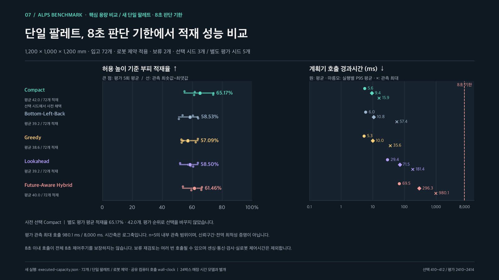
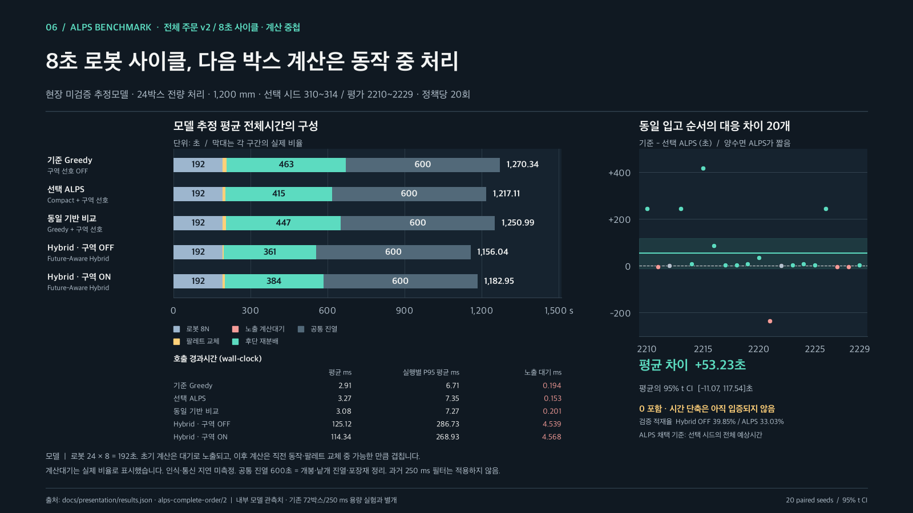
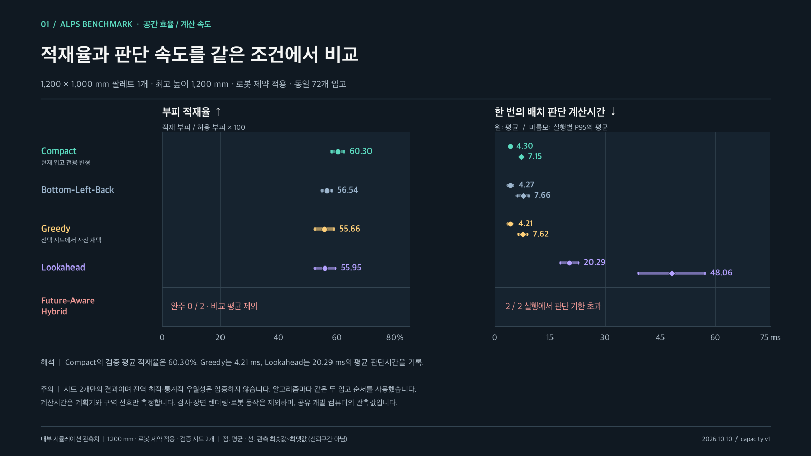
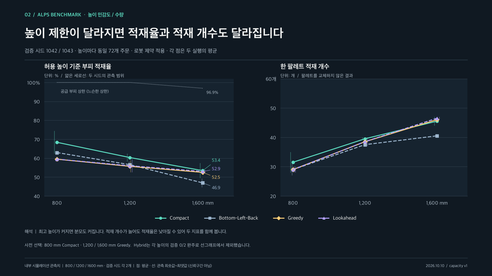
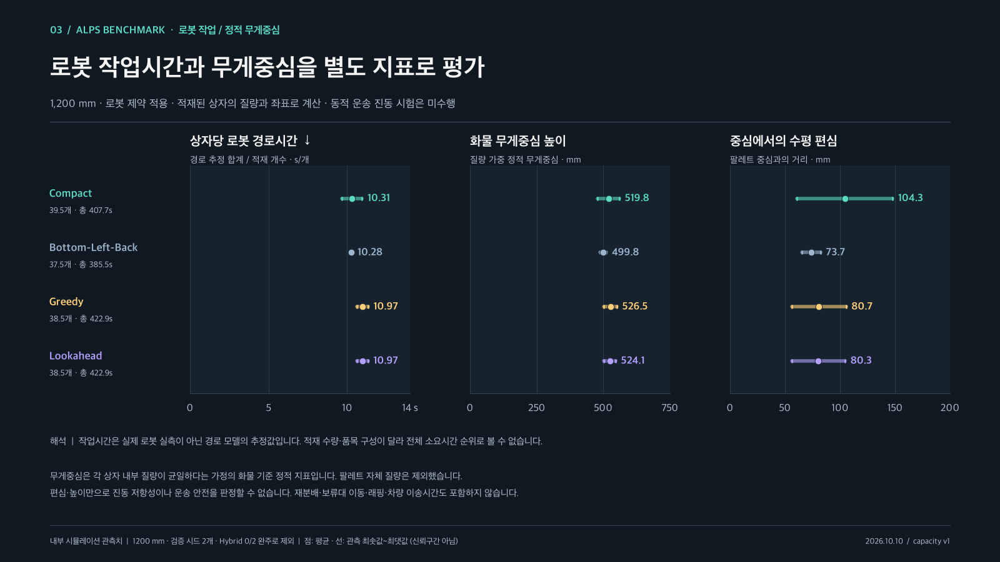
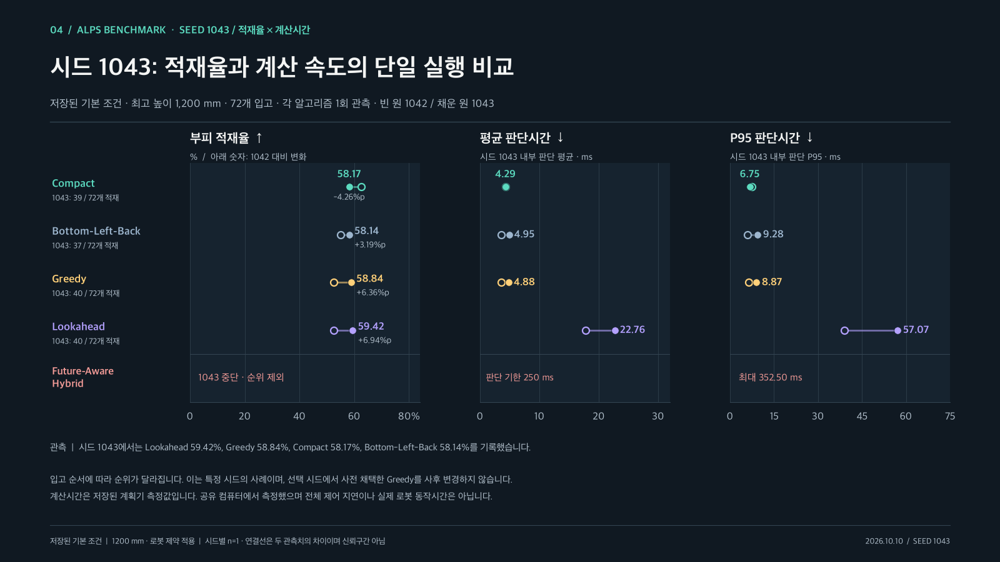
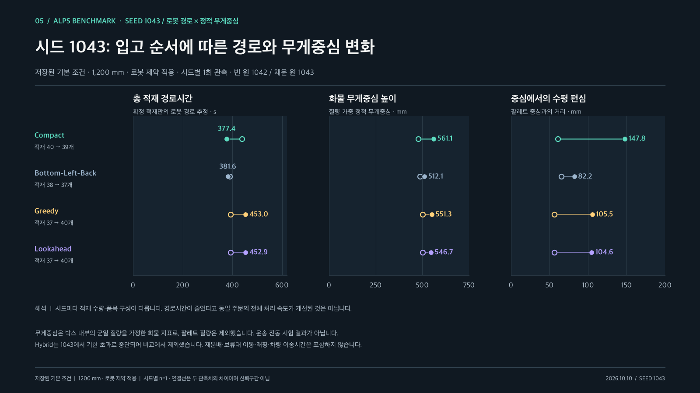

ALPS / QUALITY METRICSPPT 10p 다음에 넣을 벤치마크 차트
4K PNG와 SVG 벡터 이미지. 그래프의 원시 단위와 관측 범위를 유지하고, 불완전 실행은 비교 평균에서 제외했습니다.
핵심 용량 비교 · 단일 팔레트 · 8초 판단 기한
새로 실행한 72박스 입고, 팔레트 1개, 최고 높이 1,200 mm 조건입니다. 선택 시드 3개와 평가 시드 5개를 분리했습니다. 아래 24박스 전체 주문 시간 모델 및 과거 250 ms 실험과 섞지 않습니다.

새 8초 사이클 · 5정책 전체시간 가정 비교
별도 실험 v2의 24박스 전량 처리·평가 시드 20개 결과입니다. 로봇 동작과 다음 판단의 계산을 겹친 시간 모델이며, 매장 재분배·진열 시간은 현장 검증 전의 추정치입니다. 아래 기존 용량 실험과 데이터·계산 기한이 다릅니다.




시드 1043 상세 벤치마크
기존 저장된 기본 조건의 1,200 mm / 로봇 제약 적용 실행을 분리했습니다. 시드별 단일 관측(n=1)이며, 빈 원은 1042, 채운 원은 1043입니다. 브라우저 설정을 바꾼 새 실행 결과는 이 자료와 다를 수 있습니다.

